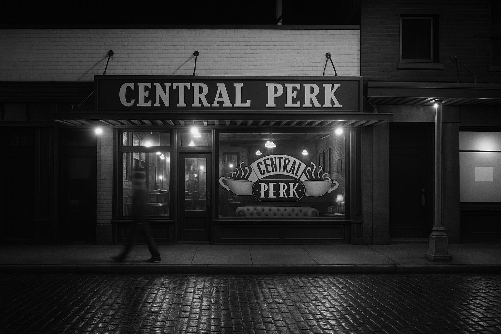
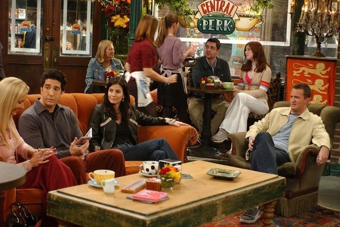

Sobre o Central-Perk
☕ As Origens
A Central Perk nasceu no coração de Greenwich Village, em Nova York, no início dos anos 90. Criada por um empreendedor apaixonado por café, arte e encontros casuais, a cafeteria surgiu como um refúgio para quem buscava um ambiente acolhedor e autêntico. Com sofás confortáveis, móveis garimpados em brechós e um palco pequeno para apresentações musicais, o espaço conquistava aos poucos os moradores da região. A proposta era simples: criar um lugar onde todos se sentissem em casa, com um bom café e boas conversas.
📉 Os Desafios Iniciais
Apesar da ideia charmosa, os primeiros anos da Central Perk foram marcados por dificuldades. A cafeteria enfrentava forte concorrência em Nova York, os custos de manutenção eram altos, e o movimento variava bastante. Havia dias em que o salão ficava quase vazio. Ainda assim, o fundador não abriu mão de sua visão. Em vez de fechar as portas, ele investiu na identidade do espaço: organizou noites acústicas, exposições de artistas locais e reforçou o atendimento personalizado, conquistando aos poucos uma clientela fiel.
🎬 O Sucesso com a Televisão
A grande reviravolta aconteceu quando uma equipe de produção de TV estava em busca de um cenário autêntico para ambientar uma nova série sobre amizade e cotidiano em Nova York. Ao conhecerem a Central Perk, os produtores se encantaram com o estilo original da cafeteria e decidiram gravar as cenas no próprio local. Assim, a Central Perk se tornou o principal cenário da série Friends, exibida a partir de 1994. Com a popularidade global da série, a cafeteria passou a atrair visitantes do mundo todo, curiosos para conhecer o espaço que viram na televisão.
🌍 Reconhecimento Global
A partir do sucesso da série, a Central Perk virou um verdadeiro ícone da cultura pop. Turistas faziam fila para sentar no famoso sofá laranja e tirar fotos no balcão onde tantas cenas haviam sido filmadas. A cafeteria apareceu em revistas, programas de TV, documentários e até inspirou outras marcas ao redor do mundo. Mesmo com toda essa fama, a equipe sempre fez questão de manter o ambiente acolhedor e familiar, sem transformar o local em um museu ou espaço temático artificial.
Hoje em Dia

Atualmente, a Central Perk continua firme em sua missão: ser um espaço para relaxar, ouvir música boa e tomar um café de verdade. A cafeteria cresceu, ganhou filiais em outros países, mas nunca perdeu sua essência. Em cada unidade, o cliente encontra o charme vintage, os detalhes cuidadosamente pensados e a sensação de estar entrando em um lugar onde o tempo passa mais devagar. Mais do que uma cafeteria, a Central Perk é uma história de superação, visão empreendedora e amor pelo que se faz.